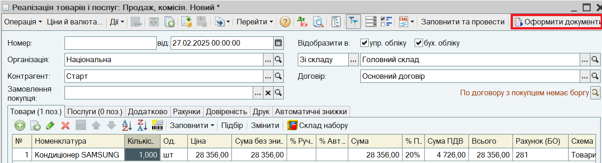
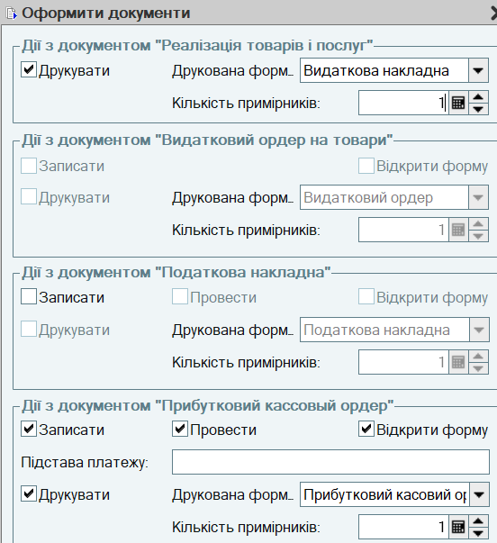
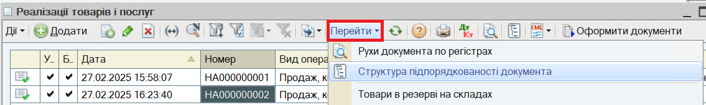
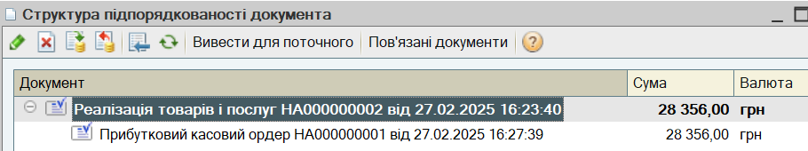

1. Оформіть новий документ Реалізація товарів і послуг для нового контрагента "Старт". Для оформлення нового документа відкрийте список документів Реалізація товарів і послуг (пукт меню Документи - Продажі - Реалізації товарів і послуг ). Заповніть документ:

2. Натисніть на кнопку Оформити документи і зазначте склад створюваного пакета документів (Реалізація товарів і послуг, Прибутковий касовий ордер) і дії з ними:

3. Натисніть на кнопку Виконати. Документи будуть сформовані і роздруковані.
ПРИМІТКА. Введені настройки зберігаються і використовуються при наступних сеансах роботи. Щоб не виводити вікно настройки при оформленні документів зніміть прапор Показувати форму настройки.
ПОРАДА. Швидке формування пакету документів продажу може здійснюватися і в Замовленні покупця за кнопкою Оформити реалізацію.
4. Для перегляду сформованого пакета документів натисніть на кнопку Перейти и виберіть пункт меню Структура підпорядкованості документа.


Наступний розділ: "Передача товарів на комісію"